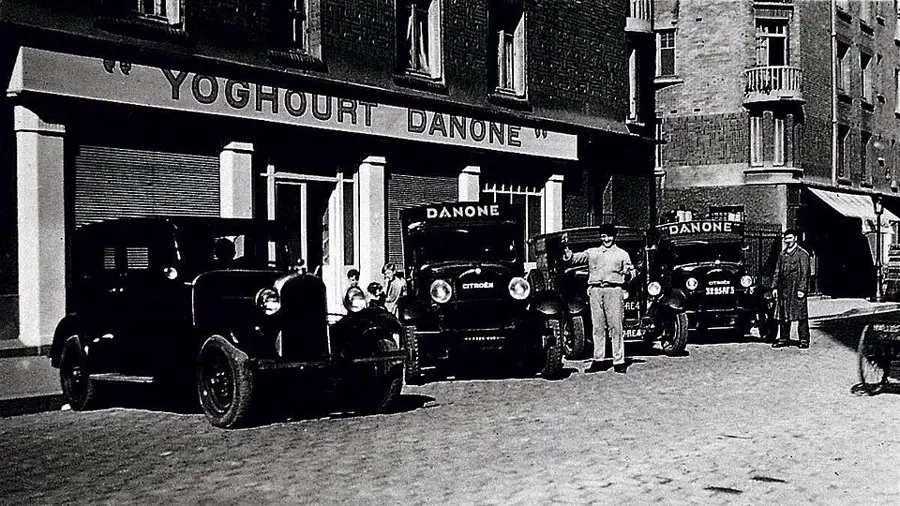
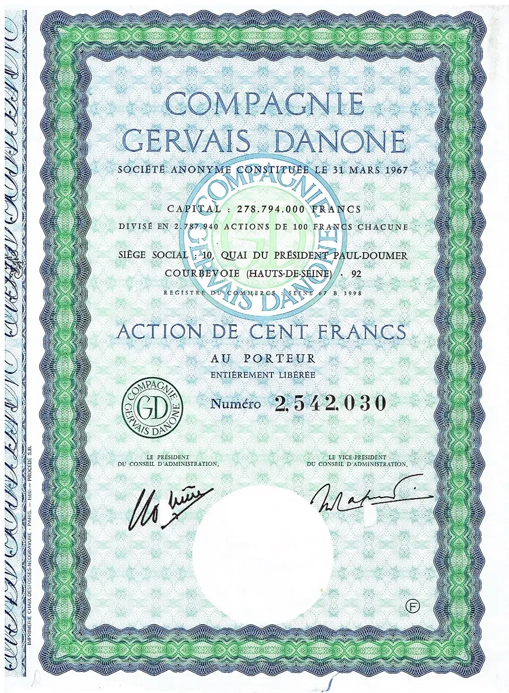

대표 로고대표 브랜드 마크
대표 로고대표 브랜드 마크다논 Danone
다논(Danone)은 프랑스 파리에 본사를 둔 다국적 식음료 기업이다. 우유와 발효유 등 낙농제품과 생수를 전문으로 하며, 세계 최대의 낙농제품 생산업체로 알려져 있다.
최종 업데이트
다논은 어떤 브랜드인가
다논은 프랑스 파리에 본사를 둔 다국적 식음료 기업이다. 우유, 유산균 및 발효유 등의 낙농제품과 생수를 전문으로 하는 그룹이며, 세계 최대의 낙농제품 생산업체로 알려져 있다.
요구르트 브랜드 Activia를 비롯해 Volvic, Evian, Badoit 같은 생수 브랜드를 소유하고 있다. 1919년 스페인 바르셀로나의 작은 요구르트 공장에서 출발해 프랑스를 기반으로 한 글로벌 기업이 되었다.
한국에서는 2008년 외국인 투자단지로 지정된 전북특별자치도 무주군 농공단지에 다논코리아를 설립해 기능성 발효유 생산시설을 세웠고, 생수 Evian과 Volvic은 롯데칠성음료와 함께 판매하고 있다. 미국에서는 상표 표기를 Dannon과 Danone으로 나누어 쓴다.
다논은 어떻게 시작되고 성장했나
다논은 1919년 Isaac Carasso가 스페인 바르셀로나에서 요구르트를 생산하는 작은 공장으로 창업한 기업이다. 1929년 프랑스에 첫 공장을 세웠고, 1937년에는 세계 최초로 과일 요구르트를 생산했다.
1967년에는 프랑스의 치즈 생산업체인 제르베를 인수했고, 2010년에는 러시아의 유니밀크를 인수했다. 2017년에는 로고를 현재의 모습으로 변경했다.
대한민국에는 1990년 두산그룹과 손잡고 요구르트 시장에 진출했으나, 빙그레의 요플레 등에 밀려 1996년 철수했다.
다논의 브랜드 아이덴티티는 무엇인가
낙농제품과 생수를 함께 다루는 프랑스 파리 본사의 식음료 기업으로, 스페인 바르셀로나의 작은 요구르트 공장에서 출발했다는 점이 특징이다.
다논의 대표 제품과 서비스는 무엇인가
다논은 세계 최대의 낙농제품 생산업체로, 사업은 우유와 유산균 및 발효유 등의 낙농제품과 생수로 구성된다. 요구르트 브랜드 Activia 외에도 전 세계적으로 알려진 Volvic, Evian, Badoit 등 여러 생수 브랜드를 소유하고 있다.
한국에서는 2009년 9월부터 LG생활건강과 함께 기능성 발효유 Activia를 생산했고, 이후 풀무원과 합작해 '풀무원다논'으로 명칭이 변경되어 요구르트 시장을 이어갔다. 생수 Evian과 Volvic은 롯데칠성음료와 함께 판매하고 있다.
미국에서는 상표 표기를 Dannon과 Danone으로 이원화하고 있다.
다논은 지금 어떤 상태인가
다논은 현재 프랑스 파리에 본사를 둔 다국적 식음료 기업이며 세계 최대의 낙농제품 생산업체로 꼽힌다. 2017년에 현재의 로고로 변경했다.
한국에서는 풀무원과 합작한 '풀무원다논'이 요구르트 시장을 이어가고 있으며, 롯데칠성음료와 함께 Evian과 Volvic을 판매하고 있다. 미국에서는 글로벌 브랜드 이미지 관리를 위해 상표 표기를 Dannon과 Danone으로 이원화하고 있다.
다논 로고는 어떻게 변해왔나
대표 로고대표 브랜드 마크사진으로 보는 다논의 역사


자주 묻는 질문
다논는 어느 나라 브랜드인가요?
다논는 프랑스의 식음료 브랜드입니다.
다논는 언제 설립되었나요?
다논는 1919년 설립되었습니다.
다논의 브랜드 아이덴티티는 무엇인가요?
낙농제품과 생수를 함께 다루는 프랑스 파리 본사의 식음료 기업으로, 스페인 바르셀로나의 작은 요구르트 공장에서 출발했다는 점이 특징이다.
다논의 대표 제품은 무엇인가요?
다논은 세계 최대의 낙농제품 생산업체로, 사업은 우유와 유산균 및 발효유 등의 낙농제품과 생수로 구성된다.
다논는 현재 어떤 상태인가요?
다논은 현재 프랑스 파리에 본사를 둔 다국적 식음료 기업이며 세계 최대의 낙농제품 생산업체로 꼽힌다.
다논의 창업자는 누구인가요?
다논의 창업자는 Isaac Carasso입니다(위키데이터 기준).
다논의 본사는 어디에 있나요?
다논의 본사는 파리에 있습니다(위키데이터 기준).
출처와 검증
다논 관련 참고: 공식 웹사이트 · 위키데이터 Q329426 · 한국어 위키백과 · 영어 위키백과. 브랜드명은 한글과 원어를 함께 표기하되 데이터에 없는 표기는 만들지 않습니다. 기원 국가·설립연도는 검수된 정의문에서 확인된 값을 우선하고, 없을 때만 공식 웹사이트 URL이 일치하는 위키데이터 개체의 값을 씁니다. 위키데이터 값은 2026-11-12 기준입니다.